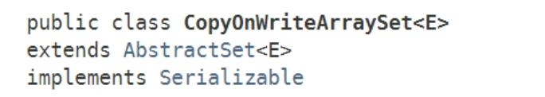

CopyOnWriteArraySet，是另一类适合并发环境的SET工具类，也是在JDK1.5时，随着J.U.C包一起引入的。
我们之前已经介绍过了ConcurrentSkipListSet，ConcurrentSkipListSet底层基于Skip List（跳表）实现，其操作平均时间复杂度均为O(logn)。
一、简介
CopyOnWriteArraySet，是另一类适合并发环境的SET工具类，也是在JDK1.5时，随着J.U.C包一起引入的。
我们之前已经介绍过了ConcurrentSkipListSet，ConcurrentSkipListSet底层基于Skip List（跳表）实现，其操作平均时间复杂度均为O(logn)。
CopyOnWriteArraySet，从名字上可以看出，也是基于“写时复制”的思想。事实上，CopyOnWriteArraySet内部引用了一个CopyOnWriteArrayList对象，以“组合”方式，委托CopyOnWriteArrayList对象实现了所有API功能。

public class CopyOnWriteArraySet<E> extends AbstractSet<E>
implements java.io.Serializable {
private final CopyOnWriteArrayList<E> al;
/**
* Creates an empty set.
*/
public CopyOnWriteArraySet() {
al = new CopyOnWriteArrayList<E>();
}
public CopyOnWriteArraySet(Collection<? extends E> c) {
if (c.getClass() == CopyOnWriteArraySet.class) {
CopyOnWriteArraySet<E> cc = (CopyOnWriteArraySet<E>) c;
al = new CopyOnWriteArrayList<E>(cc.al);
} else {
al = new CopyOnWriteArrayList<E>();
al.addAllAbsent(c);
}
}
// ...
}
二、原理
我们来看下CopyOnWriteArraySet是如何实现API接口的功能的：
public int size() {
return al.size();
}
public boolean isEmpty() {
return al.isEmpty();
}
public boolean contains(Object o) {
return al.contains(o);
}
public Object[] toArray() {
return al.toArray();
}
public <T> T[] toArray(T[] a) {
return al.toArray(a);
}
public void clear() {
al.clear();
}
public boolean remove(Object o) {
return al.remove(o);
}
public boolean add(E e) {
return al.addIfAbsent(e);
}
public boolean containsAll(Collection<?> c) {
return al.containsAll(c);
}
public boolean addAll(Collection<? extends E> c) {
return al.addAllAbsent(c) > 0;
}
public boolean removeAll(Collection<?> c) {
return al.removeAll(c);
}
public boolean retainAll(Collection<?> c) {
return al.retainAll(c);
}
public Iterator<E> iterator() {
return al.iterator();
}
public boolean removeIf(Predicate<? super E> filter) {
return al.removeIf(filter);
}
public void forEach(Consumer<? super E> action) {
al.forEach(action);
}
可以看到，上述所有的方法都是通过委托实现的，唯一的区别就是CopyOnWriteArraySet不允许含有重复元素，所以添加元素（add方法）时，内部调用了CopyOnWriteArrayList的addAllAbsent方法。
三、总结
既然CopyOnWriteArraySet也是基于“写时复制”的思想，那么它的特性也和CopyOnWriteArrayList是类似的，归结起来，有以下几点：
- 适合“读多写少”且数据量不大的场景。
- 线程安全
- 内存的使用较多
- 迭代是对快照进行的，不会抛出
ConcurrentModificationException，且迭代过程中不支持修改操作。